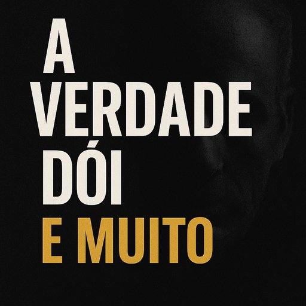

Publicado em 2025-06-06 22:27:31
Há um desconforto quase físico, uma contracção nervosa no rosto dos instalados, sempre que a verdade rompe o véu da conveniência. Porque a verdade, quando dita com a franqueza dos que não devem nada ao sistema, dói. E não apenas dói — desmascara.
Durante décadas, Portugal tem vivido ao abrigo de uma mentira confortável. Uma narrativa construída com palavras almofadadas, discursos reciclados, promessas plastificadas. A elite mediática e política não governa: encena. Não pensa: reage. Não transforma: defende-se.
E quando alguém ousa levantar a voz, denunciar o teatro, apontar o dedo aos alicerces podres do regime, logo se levantam as legiões da complacência: jornalistas de palanque, comentadores amestrados, políticos de poleiro e os eternos "especialistas" do que convém.
Eles não suportam a verdade. Porque ela é o ácido que corrói os seus castelos de papel, a luz que denuncia os ratos escondidos nas vigas do Estado. A verdade não precisa de comissões, nem de coligações — precisa de coragem. E isso, meus senhores, escasseia neste país.
A verdade é que:
E o povo? O povo já nem se revolta — resigna-se. Já não exige — espera. Já não sonha — vota por inércia.
Mas ainda há quem escreva. Quem denuncie. Quem levante pedras, mesmo que lhe atirem calhaus em troca. Porque a verdade, mesmo quando silenciada, permanece intacta, à espera de ser dita outra vez.
E esse tempo chegou.
É hora de ferir o engano com a lâmina afiada da lucidez.
E de gritar: o rei vai nu — e nu está o regime.
Artigo de Augustus Veritas
Imagem cortesia de OpenAI (c)
Segundo o mais recente relatório da Nova SBE — “Portugal Balanço Social 2024” — dois em cada cinco portugueses seriam pobres se não recebessem apoios sociais. Esta é uma daquelas estatísticas que devia ecoar em cada ministério, em cada assembleia, em cada redação e em cada mesa de café.
“Portugal é o país onde a incompetência é premiada, a corrupção compreendida e a verdade silenciada com um sorriso institucional.
Onde os medíocres governam, os canalhas acumulam, e os lúcidos são chamados de perigosos.
A pátria foi hipotecada — não a um inimigo estrangeiro, mas à cobardia dos que se ajoelham para manter o cargo, a avença, ou o silêncio dourado.”